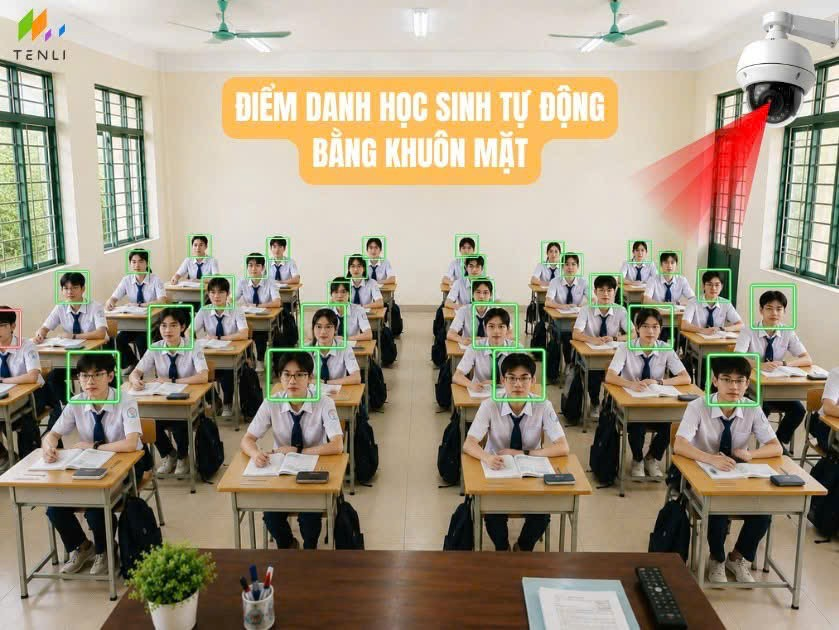

THU PHÁT HÌNH ẢNH DI ĐỘNG LIVE
THCS AMA TRANG LƠNG - KHUÔN MẶT AI
⏳ Đang kết nối Camera điện thoại...

🔄 Đổi Camera Trước / Sau
📸 Chụp & Tải Ảnh Trực Tiếp Lớp Học
💡 Hướng dẫn cấp quyền Camera trên Điện thoại:
1. Bấm vào biểu tượng 🔒 hoặc ⚙️ bên cạnh địa chỉ web trên trình duyệt điện thoại.
2. Chọn
Cho phép truy cập Máy ảnh (Camera)
.
3. Tải lại trang này để phát hình ảnh trực tiếp lên máy tính giáo viên!